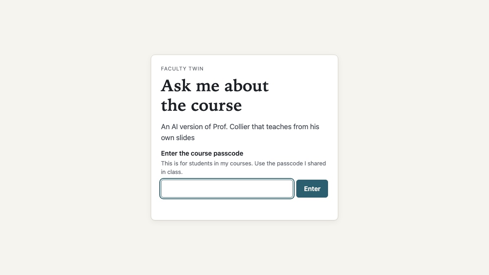

Web app · October 2026
Faculty Twin
Python, FastAPI, Claude, Voyage AI embeddings, ElevenLabs, Supabase, Vercel, Claude Code
An AI version of me that teaches from my own slides. Students ask a course question and get my slides from this semester with a narrated walkthrough in an AI voice made from my recordings, and short clips of me explaining it in class. It is behind a passcode for my students. I built it for Effective Coding with AI (15-113), a Carnegie Mellon course, as Project 2 in Fall 2026.
- Every answer comes from my own course material: a slide, its speaker notes, or what I said in class. If the material does not cover a question, the twin says so instead of guessing.
- The voice is AI-generated from my recordings, and the page labels it that way. It only reads narration the backend wrote and signed, so nobody can make it say something else.
- Students stay out of it. Class transcripts are scrubbed of names before anything is indexed, and no clip includes a student speaking.
Try it (passcode for my students) Source and prompt log on GitHub